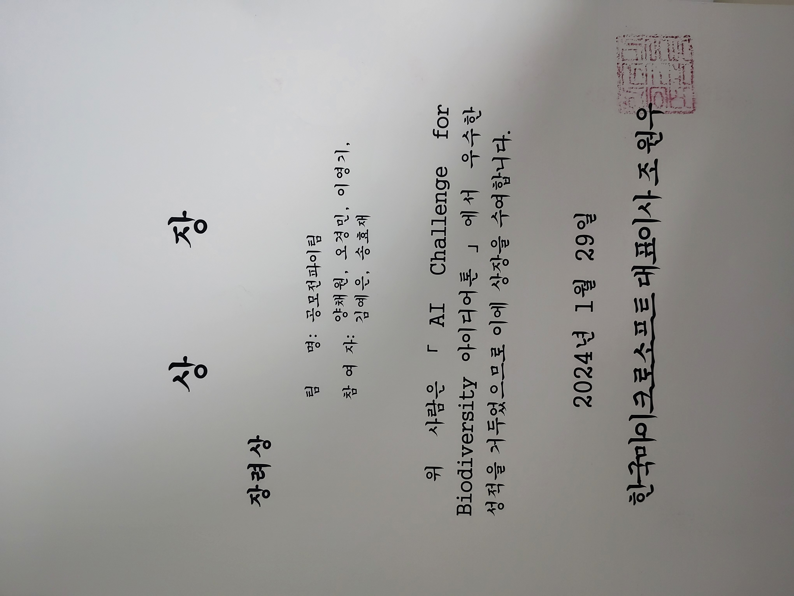
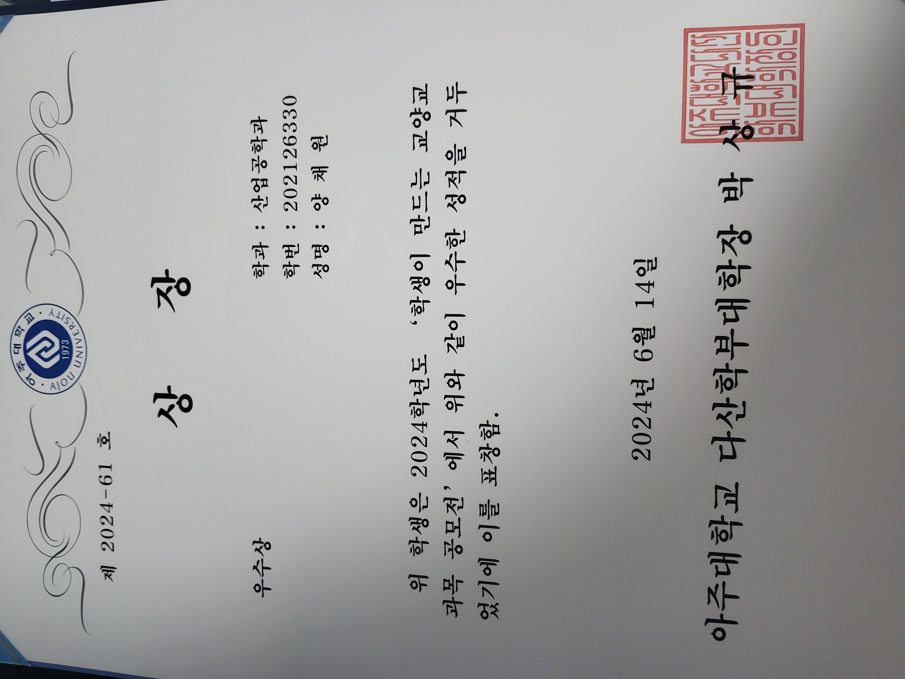

양채원
영문: YANG CHAEWON | 만 23세
휴대전화: 010-3488-7508 | 이메일: kally1239@gmail.com
주소: 경기도 용인시 수지구 만현로 25 102동 1205호
휴대전화: 010-3488-7508 | 이메일: kally1239@gmail.com
주소: 경기도 용인시 수지구 만현로 25 102동 1205호

학력
| 2021.03 ~ 2026.02 | 아주대학교 산업공학과(주) / 소프트웨어학과(복수) (학점 3.7/4.5) |
|---|---|
| 2017.03 ~ 2020.02 | 용인홍천고등학교 |
어학
| 2025.07.13 | TOEIC 860점 (YBM) |
|---|---|
| 2024.03.24 | OPIc IH (ACTFL) |
교육/연수
| 교육명 | 교육내용 | 교육기관 |
|---|---|---|
| 멋쟁이사자처럼 대학 백엔드 11기 | Java 및 SpringBoot Framework 기초 학습 및 실습, 해커톤을 통한 프로젝트 진행 | (주)멋쟁이사자처럼 |
| 알고리즘 | 분할정복, 동적계획법, 그래프 알고리즘 등 기본 기법 학습 시간 복잡도 이해 및 알고리즘 분석 방법 학습 |
아주대학교 |
| 컴퓨터 네트워크 | TCP/IP 프로토콜을 중심으로 표준 인터넷 프로토콜 학습 | 아주대학교 |
| 자료구조 | 기본 자료구조와 탐색, 정렬 알고리즘 학습 C언어로 Linked List 및 탐색 알고리즘 구현 실습 |
아주대학교 |
| 오픈소스 SW 입문 | Linux 명령어, Shell Script, Git 활용 버전관리 실습 오픈소스 라이선스 학습 |
아주대학교 |
| 컴퓨터 구조 | ARM 아키텍처 기반 하드웨어 처리 방식 학습 파이프라이닝, 병렬처리, 캐시 등 최적화 개념 학습 |
아주대학교 |
| 빅데이터 시스템 | AWS, GCP 클라우드 및 Hadoop/Spark 기반 빅데이터 처리 학습 Hadoop/PySpark 비정형 데이터 처리 실습 |
아주대학교 |
| 운영체제 | 운영체제의 자원 관리 및 추상화 방법 학습 C언어로 스케줄링, 페이징, 가상 메모리 구현 실습 |
아주대학교 |
| 기계학습 | 대표적인 기계학습 알고리즘의 원리 및 구조 학습 기계학습 알고리즘 응용 프로젝트 수행 |
아주대학교 |
수상
2025.07.31

Dean's List
아주대학교 공과대학
2025.06.10

AJOU SOFTCON 연구부문 장려상
아주대학교 SW융합교육원
2025.05.17

아주 프로그래밍 경시대회 Div.2 우수상
아주대학교 SW중심대학사업단
2024.01.29

AI Challenge for Biodiversity 장려상
한국 Microsoft
2024.06.14

학생이 만드는 교양교과목 공모전 우수상
아주대학교 다산학부대학
자격증
| 2025.06.27 | SQLD (SQL 개발자) - 한국데이터산업진흥원 |
|---|---|
| 2024.09.06 | ADsP (데이터 분석 준전문가) - 한국데이터산업진흥원 |
프로젝트 경험
도로 네트워크 전처리 툴 개발 (교내 연구과목)
Plotly.js + Flask 기반 클릭형 좌표 입력 툴 구현. 10개 좌표 처리시간 ~15분→~3분 단축, 효율 약 80% 개선.
Plotly.js + Flask 기반 클릭형 좌표 입력 툴 구현. 10개 좌표 처리시간 ~15분→~3분 단축, 효율 약 80% 개선.
물류센터 작업자 과로 방지 웹 대시보드 (2025.03 ~ 2025.06)
Firebase · Next.js · Django 기반 피로도 모니터링 서비스. 심박수 기반 분류 로직 API화, 3분 주기 분석으로 알림 지연 제거.
Firebase · Next.js · Django 기반 피로도 모니터링 서비스. 심박수 기반 분류 로직 API화, 3분 주기 분석으로 알림 지연 제거.
주식 포트폴리오 추천 시스템 (2024.09 ~ 2024.11)
yfinance + OpenAI API 활용. 2000회 몬테카를로 시뮬레이션, 배치 병렬화로 결과 산출 시간 60% 절감.
yfinance + OpenAI API 활용. 2000회 몬테카를로 시뮬레이션, 배치 병렬화로 결과 산출 시간 60% 절감.
유튜브 가짜 뉴스 판별 API
Java · Spring Boot 기반 REST API 설계/구현. 이메일 기반 중복 응답 방지, 통계 제공.
Java · Spring Boot 기반 REST API 설계/구현. 이메일 기반 중복 응답 방지, 통계 제공.
활동 및 경험
아주대학교 분산병렬컴퓨팅 연구실 인턴 (2025.06 ~ 2025.08)
자율주행 강화학습 연구, 자율주행 데이터 서비스 플랫폼 개발 참여
자율주행 강화학습 연구, 자율주행 데이터 서비스 플랫폼 개발 참여
산업공학 종합설계 팀 프로젝트 (2025.03 ~ 2025.06)
물류센터 작업자 과로 방지 서비스 개발 (웹 대시보드·서버)
물류센터 작업자 과로 방지 서비스 개발 (웹 대시보드·서버)
중앙도서관 면학장학생 (2024.09 ~ 2024.12)
업무 매뉴얼 제작, 운영 적응도 향상
업무 매뉴얼 제작, 운영 적응도 향상
대외활동 (2023.12 ~ 2024.11)
NH투자증권 빅데이터 경진대회 본선, 공개SW 개발자대회, MS AI Challenge 등 참여
NH투자증권 빅데이터 경진대회 본선, 공개SW 개발자대회, MS AI Challenge 등 참여
동아리활동 (2023.03 ~ 2025.06)
SW학과 소학회 한터(운영체제·코딩테스트 스터디), 멋쟁이사자처럼 백엔드 과정 수료
SW학과 소학회 한터(운영체제·코딩테스트 스터디), 멋쟁이사자처럼 백엔드 과정 수료
학술대회 (2025.01 ~ 2025.04)
한국인터넷정보학회 춘계학술발표대회 논문 발표 (자율주행 데이터 기반 경로 탐색)
한국인터넷정보학회 춘계학술발표대회 논문 발표 (자율주행 데이터 기반 경로 탐색)
기술 경험
- Python, Java, Django, Spring Boot, REST API, SQL
- 빅데이터 처리(AWS, Hadoop, Spark), 데이터 분석 및 시각화
- 클라우드 인프라 기본(AWS/GCP), CI/CD, Git
자기소개
금융 데이터 분석과 서비스 개발에 관심을 가지고 있으며, 프로젝트와 대회 경험을 통해 시스템 최적화, 사용자 경험 개선, 검증 기반 개발을 배웠습니다. 문제 정의와 데이터 기반 검증을 중시하며, 꾸준한 학습과 성실함을 바탕으로 빠르게 적응하고 협업할 수 있습니다.
2025년 8월 17일
성명: 양채원 (인)
성명: 양채원 (인)